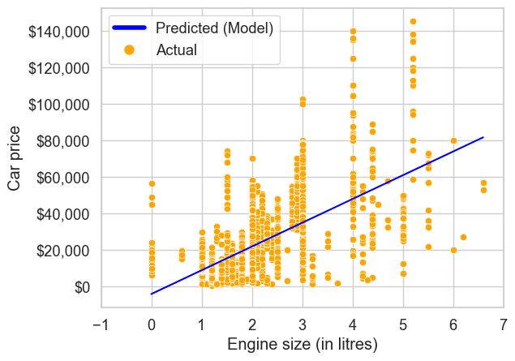
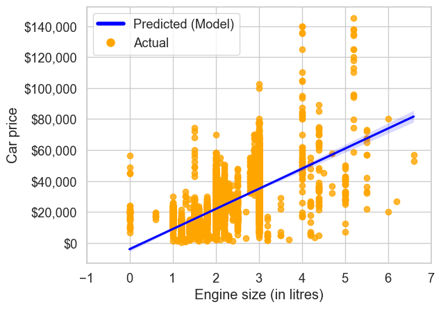
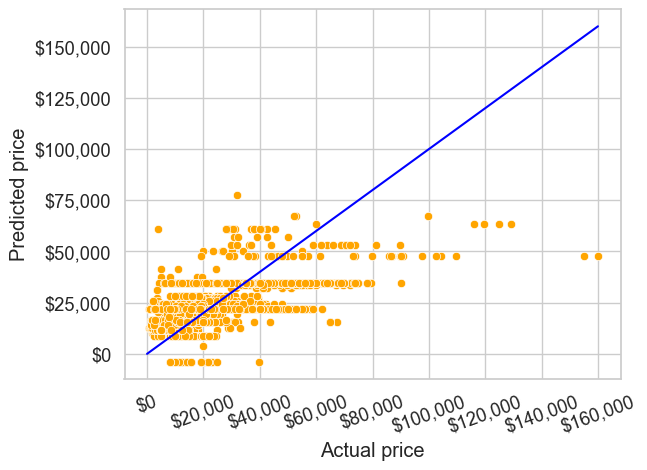
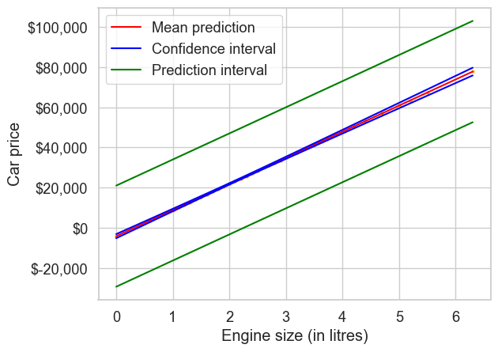
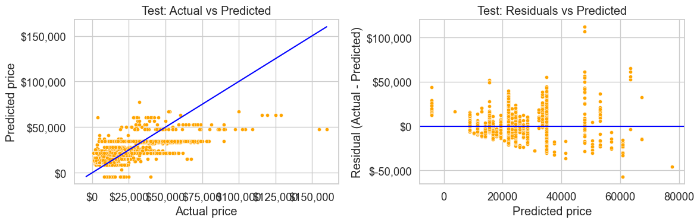

# Import necessary libraries
import numpy as np
import matplotlib.pyplot as plt
from matplotlib.lines import Line2D
import pandas as pd
import seaborn as sns
sns.set_theme(style="whitegrid", font_scale=1.2)2 Simple Linear Regression
Read section 3.1 of the book before using these notes.
Before coding, create a dedicated Python environment for this course (use the same method as STAT303-1). If you see a ModuleNotFoundError, install the missing package, for example pip install scikit-learn or pip install statsmodels.
Note: these notes focus on implementation. The book provides the conceptual explanations.
2.1 Learning objectives
By the end of this notebook you should be able to:
- Fit a simple linear regression model (\(Y=\beta_0+\beta_1X+\varepsilon\)) using
statsmodelsandsklearn. - Interpret the slope and intercept in context.
- Evaluate model performance on a held-out test set (RMSE, MAE, \(R^2\)).
- Compute and visualize confidence intervals (mean response) vs prediction intervals (new observation).
2.2 Dataset
- Training set:
Datasets/Car_features_train.csv,Datasets/Car_prices_train.csv - Test set:
Datasets/Car_features_test.csv,Datasets/Car_prices_test.csv
# Reading training set
trainf = pd.read_csv('./Datasets/Car_features_train.csv') # Predictors
trainp = pd.read_csv('./Datasets/Car_prices_train.csv') # Response
train = pd.merge(trainf,trainp)
print(train.shape)
train.head()(4960, 11)| carID | brand | model | year | transmission | mileage | fuelType | tax | mpg | engineSize | price | |
|---|---|---|---|---|---|---|---|---|---|---|---|
| 0 | 18473 | bmw | 6 Series | 2020 | Semi-Auto | 11 | Diesel | 145 | 53.3282 | 3.0 | 37980 |
| 1 | 15064 | bmw | 6 Series | 2019 | Semi-Auto | 10813 | Diesel | 145 | 53.0430 | 3.0 | 33980 |
| 2 | 18268 | bmw | 6 Series | 2020 | Semi-Auto | 6 | Diesel | 145 | 53.4379 | 3.0 | 36850 |
| 3 | 18480 | bmw | 6 Series | 2017 | Semi-Auto | 18895 | Diesel | 145 | 51.5140 | 3.0 | 25998 |
| 4 | 18492 | bmw | 6 Series | 2015 | Automatic | 62953 | Diesel | 160 | 51.4903 | 3.0 | 18990 |
# Read the test data
testf = pd.read_csv('./Datasets/Car_features_test.csv') # Predictors
testp = pd.read_csv('./Datasets/Car_prices_test.csv') # Response
test = pd.merge(testf, testp)
print(test.shape)
test.head()(2672, 11)| carID | brand | model | year | transmission | mileage | fuelType | tax | mpg | engineSize | price | |
|---|---|---|---|---|---|---|---|---|---|---|---|
| 0 | 12000 | merc | GLS Class | 2017 | Automatic | 12046 | Diesel | 150 | 37.1965 | 3.0 | 38000 |
| 1 | 12001 | vw | Amarok | 2017 | Automatic | 37683 | Diesel | 260 | 36.2442 | 3.0 | 23495 |
| 2 | 12004 | merc | GLS Class | 2019 | Automatic | 10000 | Diesel | 145 | 33.8061 | 3.0 | 59999 |
| 3 | 12013 | skoda | Scala | 2019 | Manual | 3257 | Petrol | 145 | 49.8767 | 1.0 | 16713 |
| 4 | 12017 | audi | RS6 | 2015 | Semi-Auto | 20982 | Petrol | 325 | 29.4571 | 4.0 | 46000 |
2.3 Simple Linear Regression
We will build a simple linear regression model to predict car price based on engine size.
2.3.1 Training with statsmodels (formula API)
We will use statsmodels.formula.api. The formula interface lets you specify a model with a compact string (similar to R), which is convenient for statistical modeling.
import statsmodels.formula.api as smf# Let's create the model_sm
# ols stands for Ordinary Least Squares - the name of the algorithm that optimizes Linear Regression models
# data input needs the dataframe that has the predictor and the response
# formula input needs to:
# be a string
# have the following syntax: "response~predictor"
# Using engineSize to predict price
ols_object = smf.ols(formula = 'price~engineSize', data = train)#Using the fit() function of the 'ols' class to fit the model_sm, i.e., train the model_sm
model_sm = ols_object.fit()#Printing model_sm summary which contains among other things, the model_sm coefficients
model_sm.summary()| Dep. Variable: | price | R-squared: | 0.390 |
| Model: | OLS | Adj. R-squared: | 0.390 |
| Method: | Least Squares | F-statistic: | 3177. |
| Date: | Fri, 16 Jan 2026 | Prob (F-statistic): | 0.00 |
| Time: | 09:29:29 | Log-Likelihood: | -53949. |
| No. Observations: | 4960 | AIC: | 1.079e+05 |
| Df Residuals: | 4958 | BIC: | 1.079e+05 |
| Df Model: | 1 | ||
| Covariance Type: | nonrobust |
| coef | std err | t | P>|t| | [0.025 | 0.975] | |
| Intercept | -4122.0357 | 522.260 | -7.893 | 0.000 | -5145.896 | -3098.176 |
| engineSize | 1.299e+04 | 230.450 | 56.361 | 0.000 | 1.25e+04 | 1.34e+04 |
| Omnibus: | 1271.986 | Durbin-Watson: | 0.517 |
| Prob(Omnibus): | 0.000 | Jarque-Bera (JB): | 6490.719 |
| Skew: | 1.137 | Prob(JB): | 0.00 |
| Kurtosis: | 8.122 | Cond. No. | 7.64 |
Notes:
[1] Standard Errors assume that the covariance matrix of the errors is correctly specified.
The fitted equation (from this dataset) is: \(\hat{price}\) = -4122.0357 + 12990 * engineSize
- \(R^2\) is 39%. This is the proportion of variance in car price explained by
engineSize. - The coefficient of
engineSize(\(\hat{\beta}_1\)) is statistically significant (p-value near 0), so there is evidence of a linear relationship. - The 95% CI for \(\hat{\beta}_1\) is [1.25e+04, 1.34e+04].
- Prediction intervals are not shown in the summary table.
The coefficient of engineSize is 1.299e+04 (dollars per liter).
- A one-unit increase in
engineSizeincreases the expected price by about $12,990. - A three-unit increase increases the expected price by about $38,970.
The coefficients can also be returned directly using the params attribute of the fitted model_sm object:
model_sm.paramsIntercept -4122.035744
engineSize 12988.281021
dtype: float64Visualize the regression line
ax = sns.scatterplot(x=train.engineSize, y=train.price, color="orange")
sns.lineplot(x=train.engineSize, y=model_sm.fittedvalues, color="blue")
plt.xlim(-1, 7)
plt.xlabel("Engine size (in litres)")
plt.ylabel("Car price")
ax.yaxis.set_major_formatter("${x:,.0f}")
legend_elements = [
Line2D([0], [0], color="blue", lw=4, label="Predicted (Model)"),
Line2D([0], [0], marker="o", color="w", label="Actual", markerfacecolor="orange", markersize=10),
]
ax.legend(handles=legend_elements, loc="upper left");
The same plot can be made with seaborn.regplot(). It fits a simple linear regression with y as the response and x as the predictor, then overlays the fitted line on the scatterplot.
ax = sns.regplot(
x="engineSize",
y="price",
data=train,
color="orange",
line_kws={"color": "blue"},
)
plt.xlim(-1, 7)
plt.xlabel("Engine size (in litres)")
plt.ylabel("Car price")
ax.yaxis.set_major_formatter("${x:,.0f}")
ax.legend(handles=legend_elements, loc="upper left");
# Note: some `engineSize` values appear to be 0; those are likely data issues
# and should ideally be handled (e.g., imputed/filtered) before modeling.
The light shaded region around the blue line is a 95% confidence interval for the mean response.
2.3.2 Model Prediction and Error Metrics
Now evaluate the fitted model on the test set.
# Predict car prices for the test set using the fitted statsmodels model
# (statsmodels will match the predictor name `engineSize` from `testf`).
pred_price = model_sm.predict(testf)Visualize predicted prices against actual prices (perfect predictions would lie on the line \(y=x\)).
sns.scatterplot(x = testp.price, y = pred_price, color = 'orange')
#In case of a perfect prediction, all the points must lie on the line x = y.
ax = sns.lineplot(x = [0,testp.price.max()], y = [0,testp.price.max()],color='blue') #Plotting the line x = y.
plt.xlabel('Actual price')
plt.ylabel('Predicted price')
ax.yaxis.set_major_formatter('${x:,.0f}')
ax.xaxis.set_major_formatter('${x:,.0f}')
plt.xticks(rotation=20);
The predictions are limited because we are using only one predictor. We can likely improve performance by adding more predictors in multiple linear regression.
statsmodels does not include common error metrics, so we compute RMSE and MAE with NumPy. (The \(R^2\) value is shown in the model summary above.)
sm_rmse = np.sqrt(np.mean((testp.price - pred_price)**2))
sm_mae = np.mean(np.abs(testp.price - pred_price))
print(f'Statsmodels Linear Regression Test RMSE: ${sm_rmse:,.2f}')
print(f'Statsmodels Linear Regression Test MAE: ${sm_mae:,.2f}')Statsmodels Linear Regression Test RMSE: $12,995.11
Statsmodels Linear Regression Test MAE: $9,411.33On this test set, the RMSE is around $13k.
2.3.3 Confidence interval vs. prediction interval
Next we compute confidence and prediction intervals for the test-set predictions.
#Using the get_prediction() function associated with the 'model_sm' object to get the intervals
intervals = model_sm.get_prediction(testf)#The function requires specifying alpha (probability of Type 1 error) instead of the confidence level to get the intervals
intervals.summary_frame(alpha=0.05)| mean | mean_se | mean_ci_lower | mean_ci_upper | obs_ci_lower | obs_ci_upper | |
|---|---|---|---|---|---|---|
| 0 | 34842.807319 | 271.666459 | 34310.220826 | 35375.393812 | 9723.677232 | 59961.937406 |
| 1 | 34842.807319 | 271.666459 | 34310.220826 | 35375.393812 | 9723.677232 | 59961.937406 |
| 2 | 34842.807319 | 271.666459 | 34310.220826 | 35375.393812 | 9723.677232 | 59961.937406 |
| 3 | 8866.245277 | 316.580850 | 8245.606701 | 9486.883853 | -16254.905974 | 33987.396528 |
| 4 | 47831.088340 | 468.949360 | 46911.740050 | 48750.436631 | 22700.782946 | 72961.393735 |
| ... | ... | ... | ... | ... | ... | ... |
| 2667 | 47831.088340 | 468.949360 | 46911.740050 | 48750.436631 | 22700.782946 | 72961.393735 |
| 2668 | 34842.807319 | 271.666459 | 34310.220826 | 35375.393812 | 9723.677232 | 59961.937406 |
| 2669 | 8866.245277 | 316.580850 | 8245.606701 | 9486.883853 | -16254.905974 | 33987.396528 |
| 2670 | 21854.526298 | 184.135754 | 21493.538727 | 22215.513869 | -3261.551421 | 46970.604017 |
| 2671 | 21854.526298 | 184.135754 | 21493.538727 | 22215.513869 | -3261.551421 | 46970.604017 |
2672 rows × 6 columns
Show the confidence and prediction intervals for the test-set prices.
interval_table = intervals.summary_frame(alpha=0.05)ax = sns.scatterplot(x = testf.engineSize, y = pred_price,color = 'orange', s = 10)
sns.lineplot(x = testf.engineSize, y = pred_price, color = 'red')
sns.lineplot(x = testf.engineSize, y = interval_table.mean_ci_lower, color = 'blue')
sns.lineplot(x = testf.engineSize, y = interval_table.mean_ci_upper, color = 'blue')
sns.lineplot(x = testf.engineSize, y = interval_table.obs_ci_lower, color = 'green')
sns.lineplot(x = testf.engineSize, y = interval_table.obs_ci_upper, color = 'green')
legend_elements = [Line2D([0], [0], color='red', label='Mean prediction'),
Line2D([0], [0], color='blue', label='Confidence interval'),
Line2D([0], [0], color='green', label='Prediction interval')]
ax.legend(handles=legend_elements, loc='upper left')
plt.xlabel('Engine size (in litres)')
plt.ylabel('Car price')
ax.yaxis.set_major_formatter('${x:,.0f}');
The prediction interval accounts for both noise and uncertainty in coefficient estimates, while the confidence interval only reflects coefficient uncertainty. The prediction interval is wider.
2.3.4 Training with sklearn
In sklearn, we typically work with:
X: a feature matrix (DataFrame or ndarray)y: a 1D target vector (Series or 1D ndarray)
We can fit the model and evaluate it, but (unlike statsmodels) we do not get p-values or confidence intervals from the fitted object.
from sklearn.linear_model import LinearRegression# Prepare training data (X must be 2D; y should be 1D for sklearn metrics)
X_train = train[["engineSize"]] # Note the double brackets to get a DataFrame (2D)
y_train = train["price"]
# Create the sklearn linear regression model
model_skl = LinearRegression()
# Fit the model
model_skl.fit(X_train, y_train)
# Inspect fitted parameters
slope = float(model_skl.coef_[0])
intercept = float(model_skl.intercept_)
print(f"Fitted model: price = {intercept:,.2f} + {slope:,.2f} * engineSize")Fitted model: price = -4,122.04 + 12,988.28 * engineSizeLet’s make prediction next
# Prepare test data
X_test = test[["engineSize"]]
y_test = test["price"]
# Predict on test
y_pred = model_skl.predict(X_test)
# Evaluate (train + test)
y_pred_train = model_skl.predict(X_train)sklearn provides metrics, so we can import RMSE, MAE, and \(R^2\) directly, the libary will take care of computing.
from sklearn.metrics import root_mean_squared_error, mean_absolute_error, r2_score
metrics = pd.DataFrame(
{
"Split": ["Train", "Test"],
"RMSE": [
root_mean_squared_error(y_train, y_pred_train),
root_mean_squared_error(y_test, y_pred),
],
"MAE": [
mean_absolute_error(y_train, y_pred_train),
mean_absolute_error(y_test, y_pred),
],
"R2": [
r2_score(y_train, y_pred_train),
r2_score(y_test, y_pred),
],
}
)
metrics| Split | RMSE | MAE | R2 | |
|---|---|---|---|---|
| 0 | Train | 12807.526232 | 9260.285302 | 0.390498 |
| 1 | Test | 12995.106452 | 9411.325913 | 0.386990 |
Test performance is worse than training performance, which is expected since the model was fit on the training set.
# Quick diagnostics on the test set
fig, axes = plt.subplots(1, 2, figsize=(12, 4))
# Actual vs Predicted
sns.scatterplot(x=y_test, y=y_pred, color="orange", s=20, ax=axes[0])
min_price = float(min(y_test.min(), y_pred.min()))
max_price = float(max(y_test.max(), y_pred.max()))
axes[0].plot([min_price, max_price], [min_price, max_price], color="blue")
axes[0].set_title("Test: Actual vs Predicted")
axes[0].set_xlabel("Actual price")
axes[0].set_ylabel("Predicted price")
axes[0].xaxis.set_major_formatter("${x:,.0f}")
axes[0].yaxis.set_major_formatter("${x:,.0f}")
# Residuals vs Predicted
residuals = y_test - y_pred
sns.scatterplot(x=y_pred, y=residuals, color="orange", s=20, ax=axes[1])
axes[1].axhline(0, color="blue")
axes[1].set_title("Test: Residuals vs Predicted")
axes[1].set_xlabel("Predicted price")
axes[1].set_ylabel("Residual (Actual - Predicted)")
axes[1].yaxis.set_major_formatter("${x:,.0f}")
plt.tight_layout()
2.3.5 Training with statsmodels (API)
statsmodels also provides a non-formula API (statsmodels.api) that works with matrices, similar to sklearn. This requires explicitly adding a constant term for the intercept but gives the same inference outputs (p-values, confidence intervals, etc.) as the formula API.
import statsmodels.api as sm
# Prepare the predictor matrix (need to add a constant term for the intercept)
X_train_sm = sm.add_constant(train[["engineSize"]])
y_train_sm = train["price"]
print("X_train with constant term:")
print(X_train_sm.head())X_train with constant term:
const engineSize
0 1.0 3.0
1 1.0 3.0
2 1.0 3.0
3 1.0 3.0
4 1.0 3.0# Create and fit the OLS model using the matrix API
model_sm_api = sm.OLS(y_train_sm, X_train_sm).fit()
# Display the model summary
model_sm_api.summary()| Dep. Variable: | price | R-squared: | 0.390 |
| Model: | OLS | Adj. R-squared: | 0.390 |
| Method: | Least Squares | F-statistic: | 3177. |
| Date: | Fri, 16 Jan 2026 | Prob (F-statistic): | 0.00 |
| Time: | 09:29:33 | Log-Likelihood: | -53949. |
| No. Observations: | 4960 | AIC: | 1.079e+05 |
| Df Residuals: | 4958 | BIC: | 1.079e+05 |
| Df Model: | 1 | ||
| Covariance Type: | nonrobust |
| coef | std err | t | P>|t| | [0.025 | 0.975] | |
| const | -4122.0357 | 522.260 | -7.893 | 0.000 | -5145.896 | -3098.176 |
| engineSize | 1.299e+04 | 230.450 | 56.361 | 0.000 | 1.25e+04 | 1.34e+04 |
| Omnibus: | 1271.986 | Durbin-Watson: | 0.517 |
| Prob(Omnibus): | 0.000 | Jarque-Bera (JB): | 6490.719 |
| Skew: | 1.137 | Prob(JB): | 0.00 |
| Kurtosis: | 8.122 | Cond. No. | 7.64 |
Notes:
[1] Standard Errors assume that the covariance matrix of the errors is correctly specified.
Notice the coefficients match the formula API results exactly:
- Intercept (
const): -4122.04 - Slope (
engineSize): 1.299e+04
Both approaches give the same model, but the matrix API requires manually adding the constant term using sm.add_constant().
# Make predictions on the test set (remember to add constant term)
X_test_sm = sm.add_constant(test[["engineSize"]])
pred_price_api = model_sm_api.predict(X_test_sm)
# Compare predictions from both statsmodels approaches
comparison = pd.DataFrame({
"Formula API": pred_price[:5],
"Matrix API": pred_price_api[:5],
"Difference": pred_price[:5] - pred_price_api[:5]
})
print("First 5 predictions comparison:")
print(comparison)First 5 predictions comparison:
Formula API Matrix API Difference
0 34842.807319 34842.807319 7.275958e-12
1 34842.807319 34842.807319 7.275958e-12
2 34842.807319 34842.807319 7.275958e-12
3 8866.245277 8866.245277 0.000000e+00
4 47831.088340 47831.088340 0.000000e+002.4 Summary and Key Takeaways
- All three approaches estimate the same coefficients when the intercept is handled consistently.
- scikit-learn (
LinearRegression) is simple and prediction-focused, with easy access to metrics, but no inference statistics. - statsmodels formula API provides rich statistical output and automatic intercept handling.
- statsmodels matrix API provides the same inference, with more explicit control, but requires adding the intercept manually.
- Choose based on whether you need inference, prediction, or explicit model control.